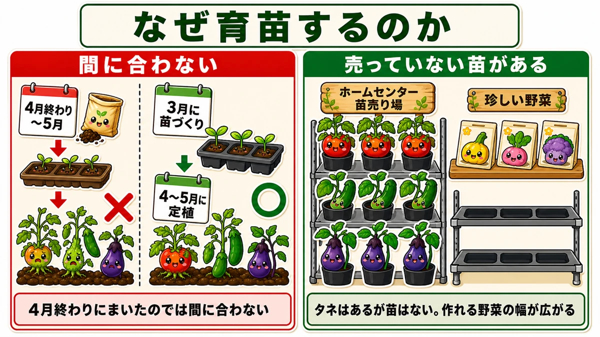
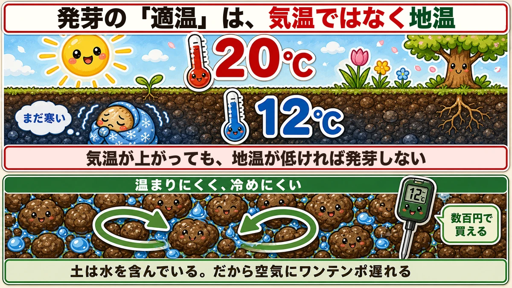
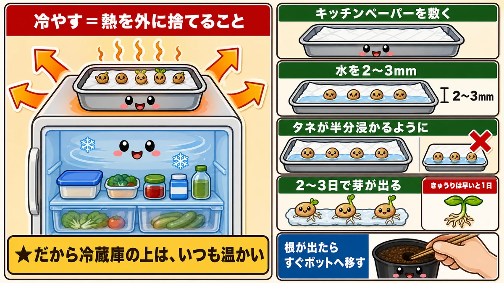
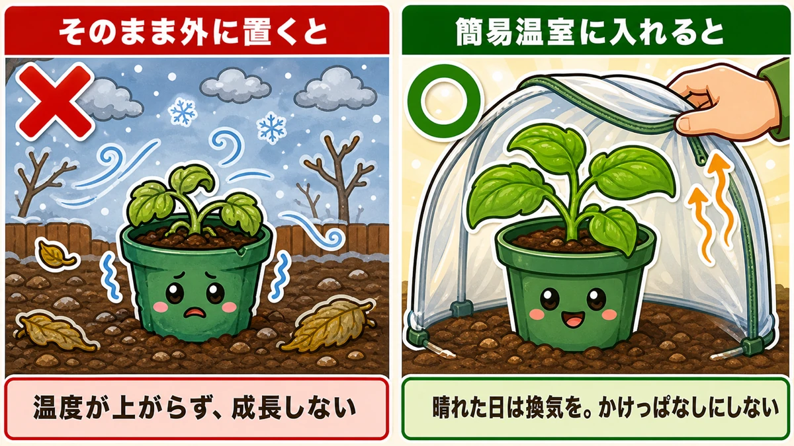
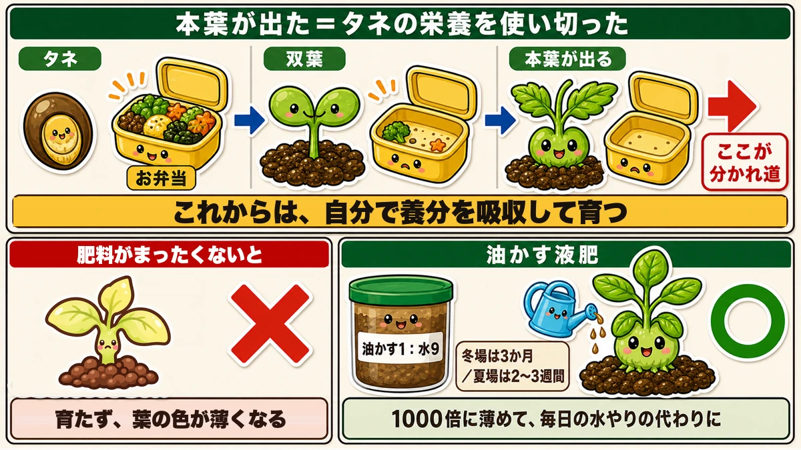
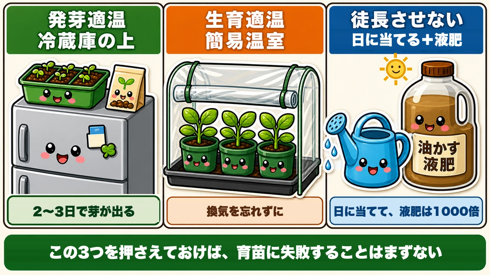

Germinate them on top of the fridge 🌱 "Germination temperature" is soil temperature, not air
🌱 "Don't you just buy plants at the garden centre?"
🌱 "I grew some from seed and they came out spindly."
🌱 "It's warmed up and still nothing has come through."
Hello, I'm Eiko. Eight years of growing vegetables organically and without pesticides, and a teaching licence in science.
Today: raising your own plants from seed. There are only three tricks to it, and none of them needs special equipment. The first one is just a shelf you already own.
And one thing before anything else:
The "germination temperature" on the seed packet is not air temperature.
Misread that and nothing you do afterwards works.
Why raise your own at all

What this diagram says （図解の文字）
- Why raise your own
- "Sowing late doesn't leave enough time" — ✗ sow late → plant out late ／ ○ sow early, plant out on time
- "Some plants are simply not sold" — garden centre plant section: "unusual vegetables — the seed exists, the plants don't"
Where I garden, summer crops go out in late spring — and you have to start the seedlings about two months earlier or they don't make it. Sow at planting-out time and the crop never catches up. Count back from your own planting-out date, whenever that falls.
"Why not just buy plants?"
Fair question. For ordinary tomatoes and cucumbers, buying is quicker and more certain. I buy them myself sometimes.
The problem comes here: the moment you want to grow something unusual, there are no plants for sale. Seed exists; plants don't. That's true of a great many vegetables.
If you want to grow the things that only exist as seed, you need this skill — and having it widens what you can grow enormously.
The key point: germination temperature is soil temperature

What this diagram says （図解の文字）
- "Optimum temperature" for germination is soil temperature, not air temperature
- 20 °C (air) ／ "still cold" 12 °C (soil)
- "However warm the air gets, seed won't germinate while the soil is cold"
- "Slow to warm, slow to cool" ／ "a few hundred yen buys one" (a soil thermometer)
- "Soil holds water, so it lags a beat behind the air"
Turn a seed packet over and it gives an optimum germination temperature and an optimum growing temperature — something like 25–30 °C (77–86 °F).
Most people read that as air temperature. I did too. The germination figure, at least, means the temperature of the soil — because that's where the seed is.
So this happens
However far the air temperature climbs, cold soil means no germination.
That early-spring feeling of "it's warm now, why is nothing up?" is exactly this: the soil hasn't caught up.
Why soil lags
Because soil holds water. Water is slow to warm and slow to cool, so soil runs a beat behind the air. The air can reach 20 °C (68 °F) in the afternoon while the soil is still at 12 °C (54 °F) — perfectly normal.
So buy a thermometer
Get a simple soil thermometer — the push-in kind costs very little. It changes how you decide.
Not "it feels warm, maybe now", but "the soil is at 18 °C, so I'll sow." That difference is large.
Trick ①: germinating them — on top of the fridge

What this diagram says （図解の文字）
- Cooling = moving heat out, not destroying it
- "Which is why the top of a fridge is often warm (depends on the model)"
- "Lay kitchen paper" ／ "water 2–3 mm deep" ／ "so the seed is half submerged"
- "Sprouts in 2–3 days" ／ "cucumber can root in a day"
The answer is almost disappointingly simple: put them on top of the fridge.
Why there
A fridge cools things all year round, and it throws that heat out. Cooling isn't destroying heat — it's moving it. The heat taken out of the inside is released at the back and the top.
So most fridges are warm on top or behind (models differ — put your hand on yours and check). And it's steady all year. There was an ideal germination cabinet in the kitchen all along.
How
A plastic tray, kitchen paper, water and your seed.
- Line the tray with kitchen paper
- Add water 2–3 mm deep
- Lay the seed out, half submerged
- Stand it on the fridge
Don't drown them — half covered is right.
How long
Two or three days. It varies: cucumber can put out a root in a day, aubergine takes longer.
As soon as a root shows, move it to a pot. Make a hole with a chopstick and transplant without damaging the root. If it flops over, don't worry about it. Water it and you're set up.
Why this is better than sowing straight into pots
It removes the "has anything happened?" anxiety. Sow into soil and you can't see in — did it rot, was it too deep? This way you watch them germinate, and you only pot up the ones that did. Nothing is wasted.
Trick ②: keeping them growing — a small cover

What this diagram says （図解の文字）
- Left outside as they are ✗ "the temperature never rises and they don't grow"
- Put in a simple greenhouse cover ○ "ventilate on sunny days; don't leave it closed"
Germinated and potted up. Now: stand those pots outside as they are and they won't grow, because it's still cold.
Use a portable greenhouse cover — the plastic sort that goes over a shelving unit, sold everywhere. That gets you close to the temperature they need.
Ventilate
Lift it when it needs air. On a sunny day it gets far too hot inside — the same problem as a tunnel in the garden. Just don't leave it shut.
Trick ③: not letting them go leggy — light, and weak feed

What this diagram says （図解の文字）
- True leaves showing = the seed's own food is used up
- seed → "packed lunch" → seed leaves → "true leaves appear" → "this is the turning point"
- "From here it feeds itself from the soil"
- ✗ "with no feed at all it won't grow and the leaf colour goes pale" — liquid feed from rapeseed meal
The third is the deepest. Leggy means drawn up thin and spindly, and it's how most attempts at seed-raising go wrong.
The day the true leaves show is the turning point
True leaves appearing means the seed leaves have used up everything stored in the seed.
A seed contains a packed lunch, and the seed leaves emerged by eating it. By the time true leaves appear, that lunchbox is empty, and from here the plant has to take its nutrition from the soil. Setting out on its own, in effect.
The main cause of legginess is too little light
Give them as much daylight as you can. High night temperatures, too much water, and too much fertiliser — nitrogen especially — also cause it.
But with no nutrients after the true leaves appear, the plant doesn't grow and the leaves go pale: lunchbox empty, no next meal. So you top it up a little at a time, very dilute.
Making liquid feed from rapeseed meal
One part rapeseed meal to nine parts water, left to ferment.
- Three months in winter
- Two to three weeks in summer
So if you want it in spring, you start it in midwinter. A good job for a quiet cold week.
Using it
Dilute to roughly 1:1000 and use it instead of plain water, every day. Dilute because a strong solution damages roots. A little, often.
Plenty of light plus this, kept up, gives you sturdy plants.
When they're ready
About a month of this and you have a solid plant with three or four true leaves. That's planting-out size.
The three answers

What this diagram says （図解の文字）
- Germination temperature → on top of the fridge — "sprouts in 2–3 days"
- Growing temperature → a simple greenhouse cover — "don't forget to ventilate"
- Not going leggy → daylight + dilute rapeseed-meal feed
That's all of it. Get those three right and seed-raising rarely fails. A fridge, a plastic cover and some rapeseed meal — nothing specialised anywhere.
Science bit: why do they stretch? 🔬
Short of light, they aim upward
Plants can seek light. Short of it, the plant concludes that there must be more further up — and extends the stem. It goes for height before thickness.
The result is thin, weak and prone to falling over. The same reason a plant on a windowsill is longer and lankier than one in the back of the room.
Feed: too little is as bad as too much
Thickening a stem takes materials. Lunchbox empty and no next meal means no material to thicken with. Too much fertiliser, though, and the stem grows soft and over-extended.
True leaves appear exactly when the lunch runs out. Don't let the meals stop, don't overdo them — which is precisely what "1:1000, daily" is arranged to achieve.
And back to the lagging soil
The soil temperature point at the top is the same physics. Water is slow to warm and slow to cool — technically, it has a high specific heat capacity. It's why the coast is cooler in summer and milder in winter.
Soil holds water, so soil does the same. However much the air warms, the soil only catches up slowly.
To sum up
- ✅ Germination temperature on the packet means soil temperature
- ✅ Warm air with cold soil = no germination. Buy a soil thermometer
- ✅ Count back from your planting-out date — about two months
- ✅ Germinate on top of the fridge: kitchen paper, 2–3 mm of water, seed half submerged
- ✅ Two or three days; pot up as soon as a root shows
- ✅ A simple greenhouse cover for growing on — and ventilate on sunny days
- ✅ True leaves = the seed's own food is gone. From here it feeds itself
- ✅ Legginess is mostly too little light; also warm nights, overwatering, too much nitrogen
- ✅ Rapeseed-meal liquid feed, 1:9 fermented, used at 1:1000, daily
- ✅ Ready at three or four true leaves, about a month later
You don't have to do all of it. Put your hand on top of your fridge. If it's warm, you already have the hardest part 🌱
Thank you for reading!